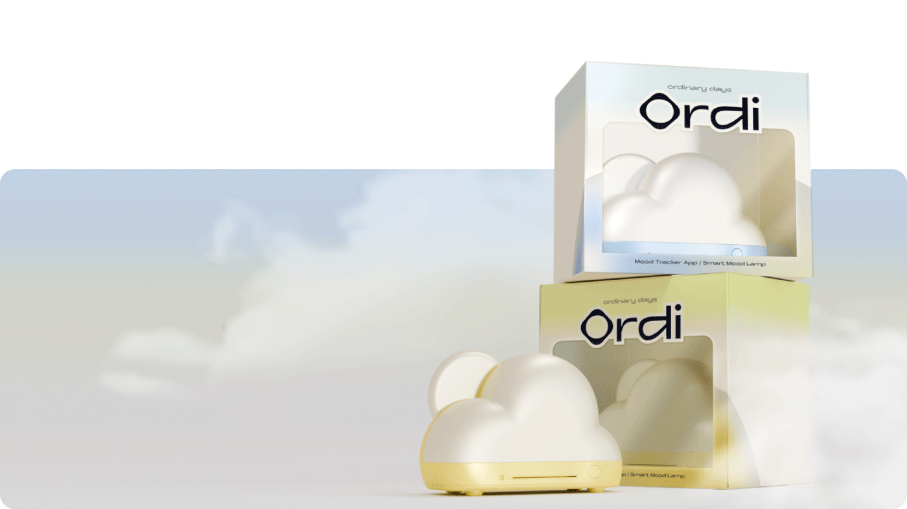
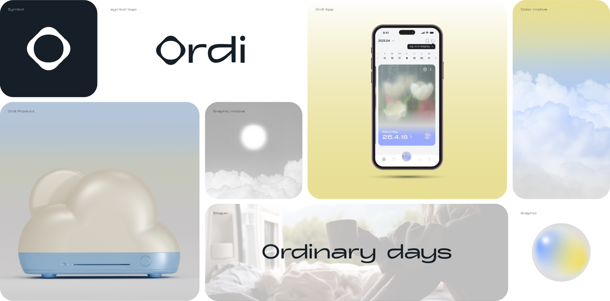

ORDI
ORDI



Ordi는 어플리케이션과 조명 제품을 결합한 감정 케어 서비스입니다.
어플리케이션과 제품의 인터랙션을 통한 새로운 경험을
제공합니다.
Ordi is an emotional care service combining a mobile application and a lighting product. It delivers a new experience through the interaction between the app and the physical device.
INSIGHT
다이어리 사용자들에게 물어봤어요
어떤 다이어리를 사용하세요?
아날로그 병행
두 종류의 다이어리를 함께 사용할 때
불편했던 점은 무엇인가요?
같은 걸 두 번 쓰는 게 비효율적이에요
어떤 날은 어플에만, 어떤 날은 종이 다이어리에만 쓰기도 해요
두 개를 동시에 유지하는 게 피로해요
다이어리를 쓰는 대다수의 사람들이 디지털 다이어리와
아날로그 다이어리를 함께 사용하지만, 두 번 기록해야 하는 번거로움이 있어요
아날로그 다이어리,
왜 사용하세요?
디지털 다이어리,
왜 사용하세요?
디지털 다이어리에서
아쉬운 점이 있나요?
종이 다이어리보다는 감정 몰입이 잘 안돼요
쌓인 기록의 실물이 없어서 성취감이 덜해요
꾸미기 어플, 분석 어플 따로예요
아날로그 다이어리의 감성과
디지털 다이어리의 편리함을 함께하는 다이어리 서비스가 필요해요
비슷한 서비스와의 비교
일일이 감정 키워드를 입력하는 불편함
감정 그 자체에만 초점을 둔 아쉬운 분석
인지적 관점
 결정 피로
결정 피로
개인이 장시간 의사결정을 한 후 내리는
의사결정의 질이 저하되는 현상
힘든 하루 일과,
복잡한 작성 과정
피로 누적
감정의 원인을 더욱 편리하게 카테고리화
인터랙션 관점
심리적으로 의미가 다른 색상
색 온도 별로 다른 심리적 효과
인터랙션 조명 제공
STRATEGY
아날로그와 디지털의 장점을 계승한
감정 중점 다이어리 서비스!

작성은 더 간편하게,
감성은 더 몰입되게
감정의 변인을 수동으로 기록하거나
앱과 아날로그 다이어리를 두 번 기록하게 되는
번거로운 과정을 최소화할 수 있는 기획
어플리케이션과 제품의
인터랙션을 통한 새로운 경험
제품을 통해 디지털 다이어리의
한계를 보완하고
조명을 활용해 실질적인 심신 케어를 제공